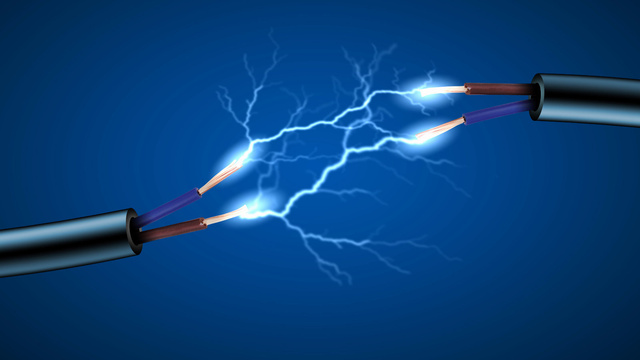

Electricity

Movement of electrons through a conductor constitutes electric current.
Conventional direction of electric current is taken as direction opposite to flow of electrons.
i.e,. from positive terminal to negative terminal of a power source.
SI unit of current is Ampere(A).
A difference in the potential produced by a power source along a conductor
makes the electrons to move and produce current.
This difference in potential is know as potential difference.
SI unit of potential difference is Volts(V).
In a conductor The voltage is directly propotional to the current.
This phenomenon is called Ohm's Law.
Resistance is the property of a conductor to resist the current.
SI Unit of resistance is ohm.